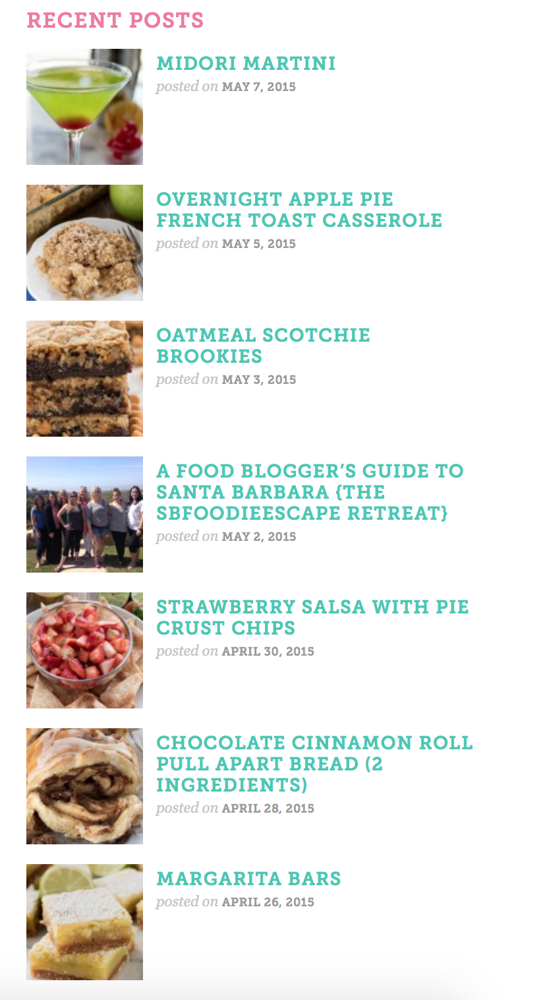
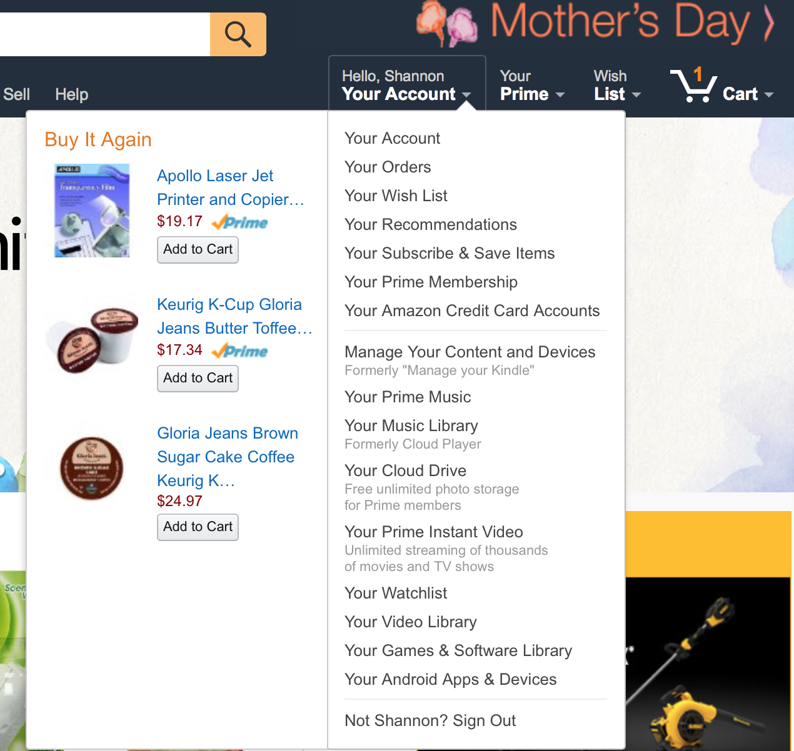

Who is Shannon R. Williams?
I am a 45 year old mother of two that made
a bold decision to go to college and start a new career. So far, this has been
a very positive experience! (thank goodness)
I have been working in an office as secretary, bookkeeper, customer service, and
administrative assistant for 16 years. It was time for a change.
As I was searching the Internet for online schools, Full Sail popped up over and over
again. I clicked to check out what they had to offer. I have always been interested
in computers and have taught myself how to use them efficiently but I am no artist!
Web Design and Development! Perfect!
About
The target audience for Bluebird is people who need credit cards but don’t want
an annual fee or to have a credit check. The ABOUT page clearly states all of
the features offered by Bluebird. There is even a short video to help explain more
about the company. The design is clean and simple. Nothing fancy or confusing about
this page which makes the user feel comfortable. Blues and greens are calming and trustworthy colors.

Blog
This blog is from Crazy for Crusts cooking website. The blog runs down along the right side of the
page. By using colorful pictures, the user is drawn in to reading the comments and posts. This website
is geared toward foodies and people who love to cook. Fun, bright colors are used to emphasize titles and features.

Account Info
Amazon.com has the best account page around. After you login, mouse over the tab marked account
and a drop down menu pops up with a lengthy list of options along with items recently purchased in
case you want to buy them again. Amazon.com targets online shoppers of all kinds and people looking
for bargains. Even though their site includes a tremendous amount of information, it is all very well
organized using drop downs, which make it easy for the user to navigate.

Contact
This contacts page comes from my bank. Even though the colors used are bright, they still give the
feeling of stability and comfort. (blues and greens again) The page for contacts is minimal and gives
very few options, which is straight to the point. The user does not have to wade through pages of
information to get what they need.

Call to Action
This call to action is from Old Navy. Talk about straight to the point. A picture of their featured
item and sale information with a handy "shop now" link that takes you directly to the sale items. With the
use of unique fonts of varying sizes and an exciting bright color, this CTA takes the user to the exact
place Old Navy wants them.

Registration
Best Buy has a very easy registration page. A light blue box makes some information more important
so the user will pay attention to it. This info makes it easier to sign up if the user has already
joined the My Best Buy club or applied for a credit card. The website will pull the rest of the user’s
info from that database. More blue is used…

Login
The login page for Flixster is easy as pie. There is an option to sign in with Facebook or Google
to save the user the time of filling out the registration form. This is also the area to login if
you already have an account. A remember me option is available as well as a forgot password link for
those who did register. People who use Flixster usually have a digital movie library and are ready
to watch a flick, not fill out forms.